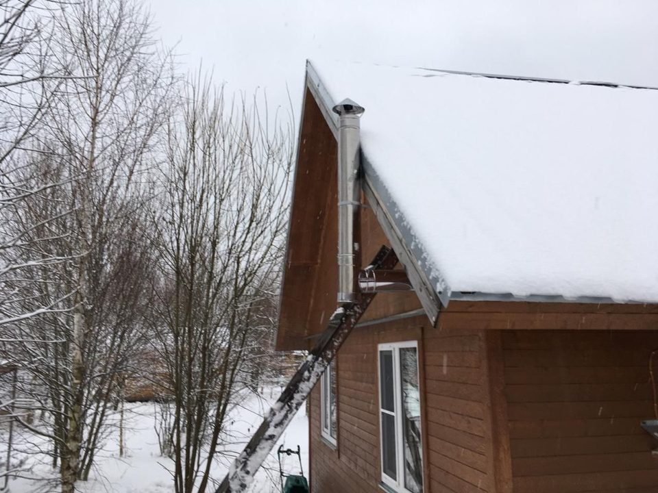

Сэндвич-труба без расчёта
- Труба заканчивается ниже зоны ветрового подпора — при ветре с этой стороны тягу может опрокинуть
- Без утепления: металл остывает, внутри конденсат, снаружи наледь и потёки
- Высоту и сечение берут по месту, без расчёта под конкретный дом
- Если тяга опрокинулась, вытяжка работает как приток: при утечке газ пойдёт в жилые комнаты, а не в атмосферу